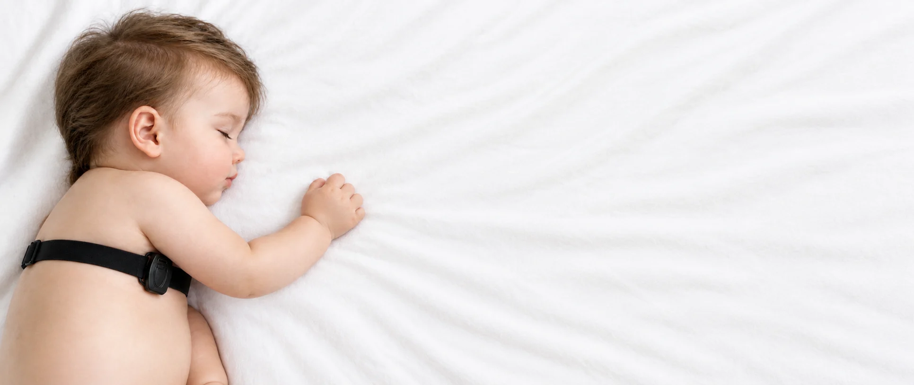
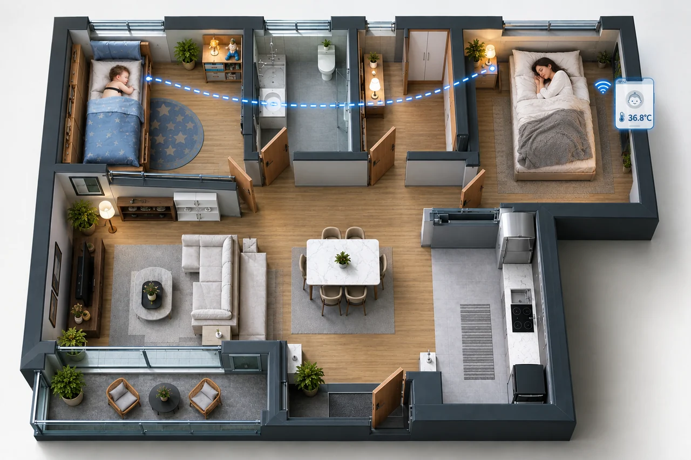
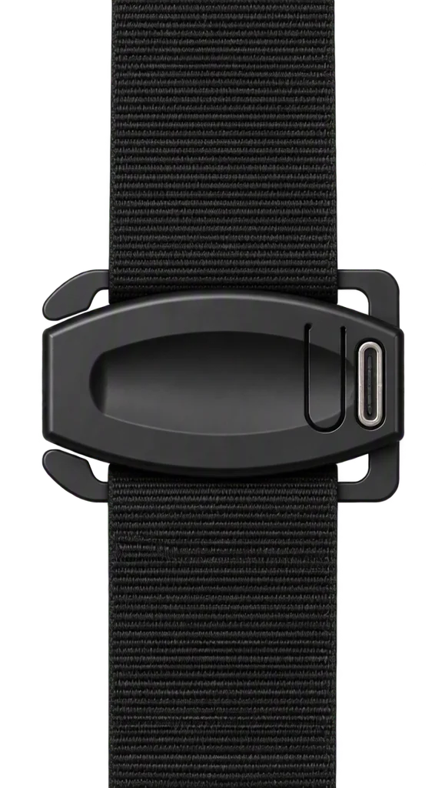
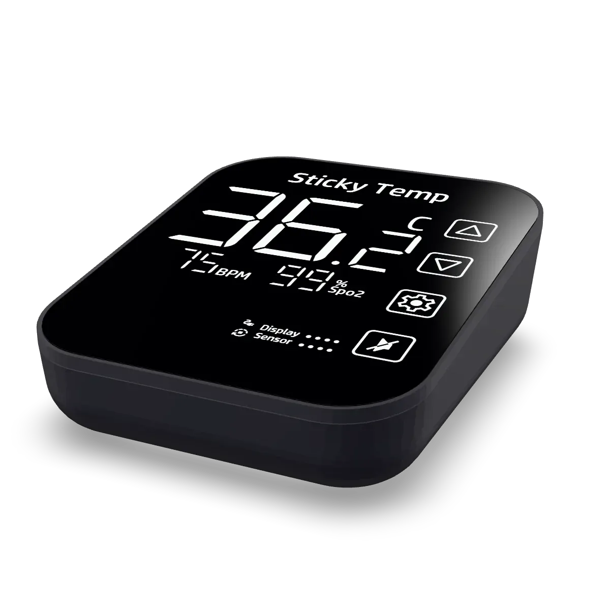
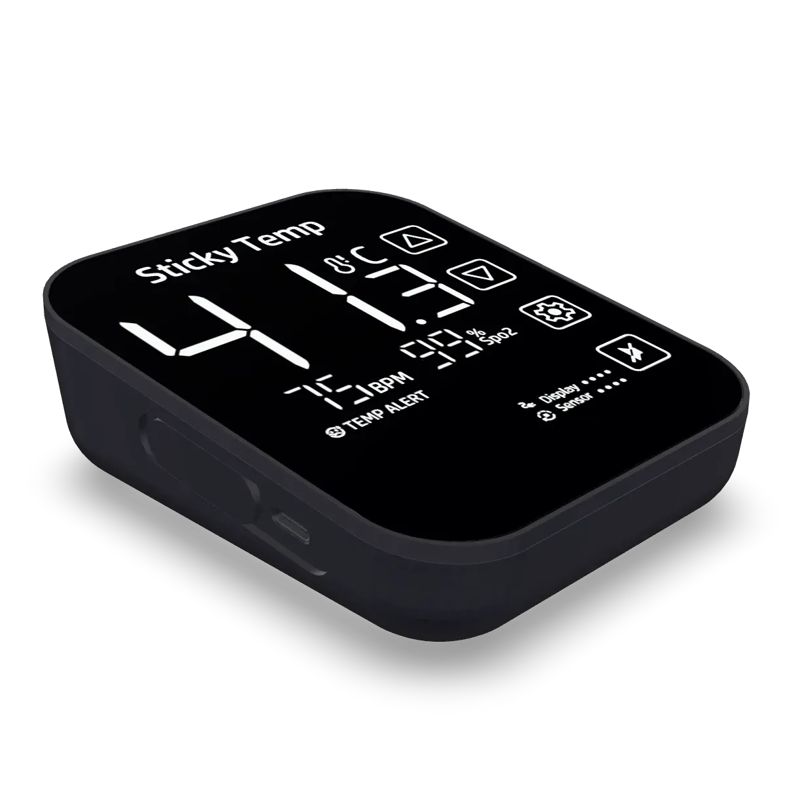
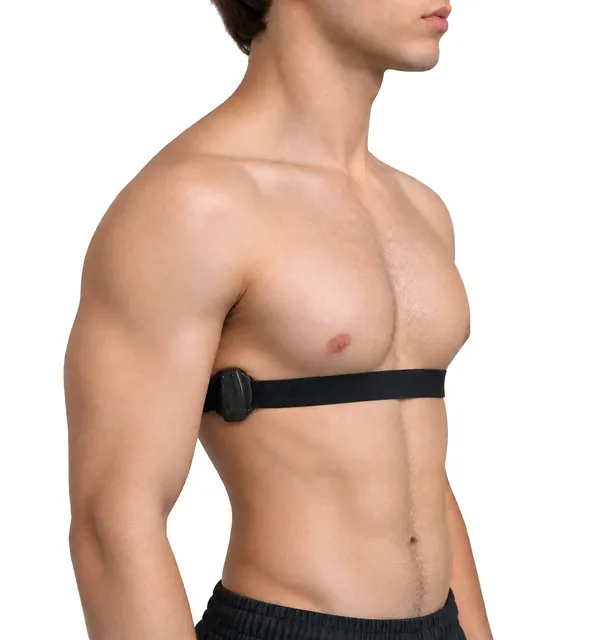
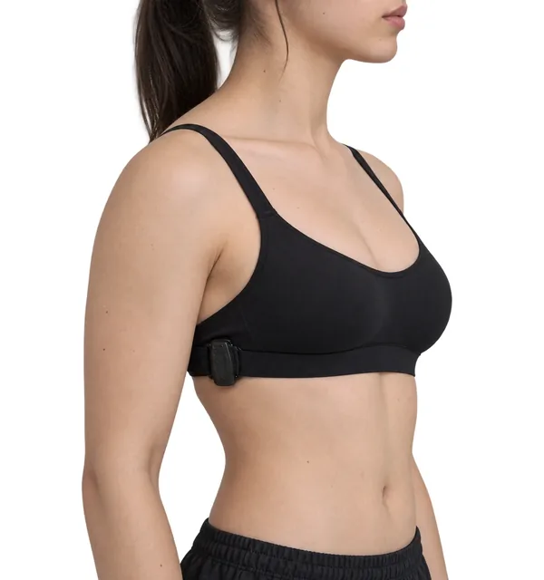
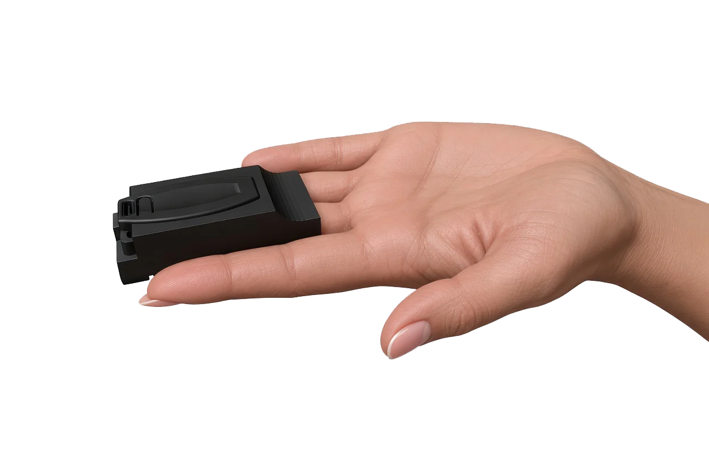
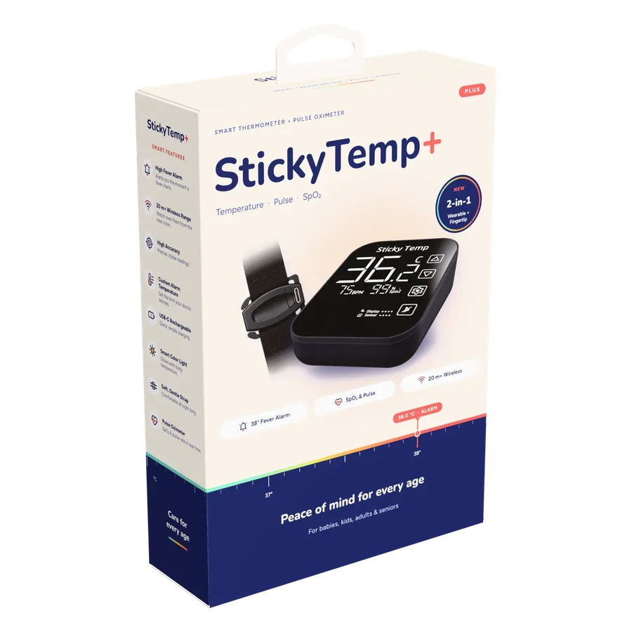

۳۷٫۰°C
تبِ شبانه، بیصدا
دما در فاصلهٔ دو بار چککردن بالا میرود؛ وقتی همه خوابیم.
سنسور در حال روشن شدن
۰٪

سنسورِ سبک روی بدن کودک، دما را لحظهبهلحظه میسنجد. نمایشگرِ کنار شما، هر تغییر را نشان میدهد و در دمای خطر هشدار صوتی میدهد.
دما را پیوسته اندازه میگیرد؛ بیآنکه خوابش به هم بخورد.

دمای لحظهای را نشان میدهد و پیش از تبِ خطرناک، بیدارتان میکند.
در یک نگاه
۳۷٫۰°C
دما در فاصلهٔ دو بار چککردن بالا میرود؛ وقتی همه خوابیم.
ارسال زنده
هر لحظه دما را میسنجد و بیسیم به نمایشگر میفرستد.
۳۸٫۵° · بیدار شوید
نمایشگر پیش از آنکه تب خطرناک شود، به صدا درمیآید.
شما میخوابید، Sticky Temp بیدار است.
یک شب معمولی
والدین هر چند ساعت یک بار دما را چک میکنند. تب، دقیقاً در فاصلهٔ همین چکها بالا میرود.
چرا مهم است
۲ تا ۵٪
از کودکان ۶ ماه تا ۵ سال، دستکم یک بار تشنجِ ناشی از تب را تجربه میکنند.
۲۴ساعت
بیشتر این تشنجها در نخستین روزِ تب رخ میدهند؛ اغلب وقتی دما سریع بالا میرود.
۴۸ساعت
بعد از بسیاری از واکسنها، تب معمولاً در همین یکیدو روزِ اول ظاهر میشود.
Sticky Temp نمیگذارد تب بیخبر بالا برود.
راهحل

بندِ نرم و قابل تنظیم، سنسور را روی بدن کودک نگه میدارد. سبک است و خواب را به هم نمیزند.

دمای لحظهای را از اتاق دیگر میبینید؛ بیآنکه کودک را بیدار کنید.

اگر دما به آستانهٔ تعیینشده برسد، نمایشگر با صدا بیدارتان میکند.


برای همه سنین
برای سالمند، بیمارِ بعد از جراحی یا هر کسی که شب تنها میماند: همان سنسور، با بندِ قابل تنظیم روی بدن بزرگسال.
فراتر از دما
۷۵BPMضربان قلب
۹۹٪اکسیژن خون

سفارش و خرید

برای سفارش، روی دکمهٔ زیر بزنید؛ پیام آماده در تلگرام باز میشود.
سفارش در تلگرامایمیل: StickyTemp@gmail.com